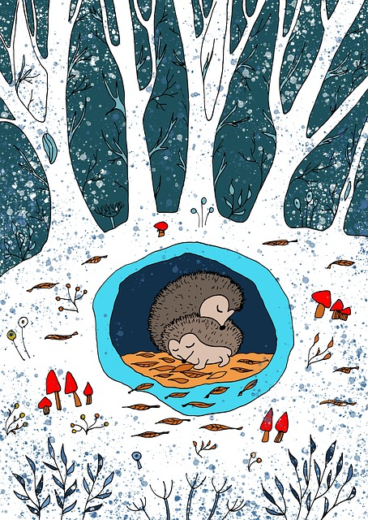

One cold winter day, as snowflakes danced gently from the sky, a little rabbit hopped out of her burrow, shivering. She was looking for something to eat, but the ground was frozen, and the world was quiet.
Not far away, a young fox sat beneath a snow-covered tree. He, too, was cold and hungry, his red fur dusted with snow. The fox saw the rabbit and narrowed his eyes—not out of hunger, but curiosity.
The rabbit noticed the fox and froze.
But instead of chasing her, the fox simply said, “I’m tired of hunting. The snow is too deep today.”
The rabbit blinked. “I’m tired of running.”
So, the fox scooted over and sat beside her. For a long while, they sat in silence, watching the snow fall, listening to the wind hum through the trees.
Eventually, the fox said, “Funny how peaceful things feel when we stop chasing and running.”
The rabbit smiled. “Yes. I think the snow wants us to slow down.”
And so, predator and prey shared the stillness, warmed by the quiet magic of winter and an unexpected friendship.